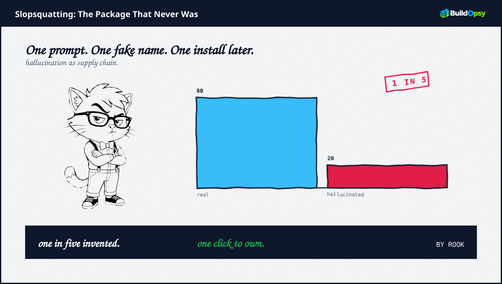
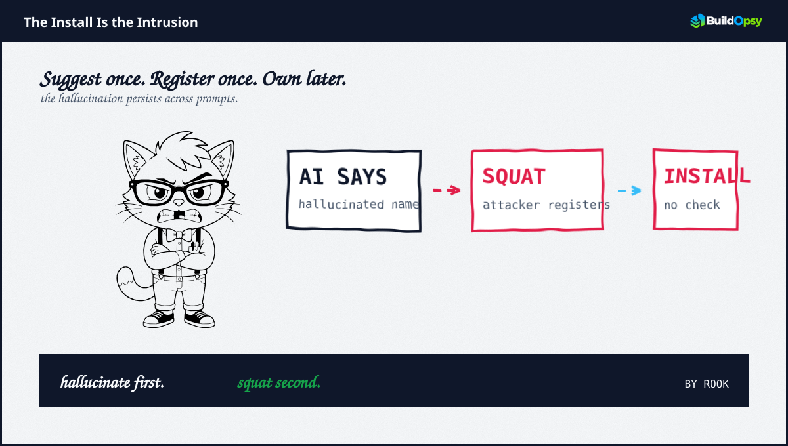

1. The Hallucination
AI coding assistants suggest packages as helpfully as any teammate. The suggestion looks plausible. It matches naming conventions. It fits the stack. Sometimes the package is real. Roughly one in five times it is not. Research traced by TechTarget puts the hallucination rate near twenty percent, with the same fake name reappearing across identical prompts. Repeatability turns a random failure into an address defenders can predict plus attackers can claim.
The recurrence is the hinge. Non-existent names that recur can be harvested in bulk. Probe a model with common prompts. Collect the ghosts it invents. Register those ghosts before anyone notices they are ghosts. The model does the naming. The attacker does the filing.
2. The Squat
Slopsquatting is typosquatting with a better informant. Typosquatting bets a human will misspell. Slopsquatting asks a model to invent. The attacker then registers the invented name on the public registry. No typos required. No targeting required. Wait for the next developer who trusts the next suggestion.
One documented case traced by Aikido Security involved a hallucinated package name variant `react-code-shift`. The timeline is blunt. The model suggests. The attacker registers. The payload waits. The developer who runs the suggested install promotes the payload to production dependency. The privileged step in the supply chain was delegated to a system that invents names that do not exist.
Registries are built for speed, not for skepticism. First claim wins. There is no check that a package was hallucinated. There is no flag that a name appeared in model output before it appeared in the registry. The registry sees a normal publish. The context is elsewhere.

3. Why Verification Fails
Trust is mispriced. Developers treat assistant output as review. Assistants generate output that looks reviewed. The mismatch is felt only after the install.
Scanners look backward. Traditional supply chain tools flag known malicious packages or known typos. Slopsquatting registers new names that have no reputation. The novelty that makes the tactic reliable is the same novelty that makes retrospective scanners blind.
Registries lack provenance. No current registry records whether a name first appeared as a hallucination. Without provenance, squatted ghosts are indistinguishable from legitimate new packages. First appearance plus first publish look identical.
Regulation now demands receipts. The EU Cyber Resilience Act requires incident reporting by September 11 2026. A slopsquat that becomes a breach must be reported. A suggest-then-install workflow that leaves no audit trail cannot produce the receipts a regulator will soon ask for.
4. What Should Happen Instead
First, verify existence before suggestion surfaces. Assistants should check suggested dependencies against live registry state. Non-existent suggestions should be marked hallucinated, never rendered as installable commands.
Second, verify before install. Developers should treat any AI suggested dependency as unverified until existence plus reputation are checked outside the suggestion context. Install is a security boundary. It should behave like one.
Third, registries should rate-limit first claims on recently hallucinated names. A short cooling window plus a provenance check on names that appear in known hallucination sets would blunt bulk squatting without blocking legitimate publishing.
Fourth, keep SBOM plus attestation. An SBOM that records who suggested a dependency plus whether it was verified answers the question an incident will later ask. OMB M-26-05 already pushes federal attestation toward risk-based models. Suggestion provenance belongs there.
Fifth, enumerate hallucinated sets proactively. Continuous probing of assistant outputs can produce deny lists for registry defenders. The hallucination is predictable. The defense should be too.
5. The Verdict
Slop becomes squat when scale meets predictability. Scale arrives with near universal assistant adoption. Predictability arrives because hallucinations recur. The attacker need not breach a model. The attacker needs to register what the model already promised.
Registries fixed typosquatting with fuzzy detection. They have no fix for hallucination squatting that detects intent that does not exist in the registry. That fix lives earlier. Reject non-existent suggestions at the assistant. Verify every install at the terminal. Record suggestion provenance for the audit that now has a deadline.
The model invents the name. The registry files it. The install completes the delivery.
Sources and Method
This audit follows September 2026 TechTarget reporting on Aikido Security research plus EU Cyber Resilience Act timelines. Hallucination rates are as reported. No exploit steps are reproduced. This is analysis, not a reproduction guide.